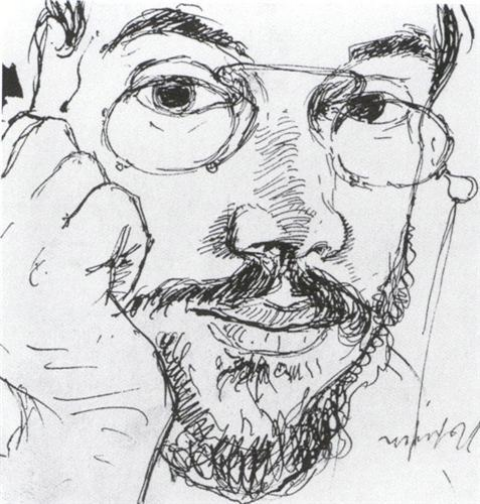
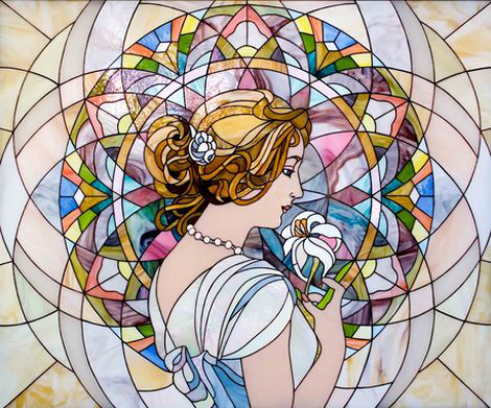
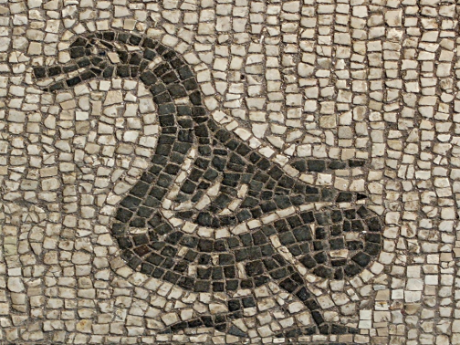
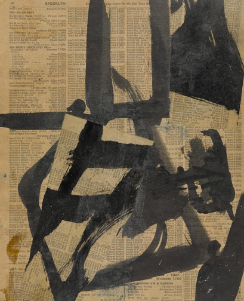
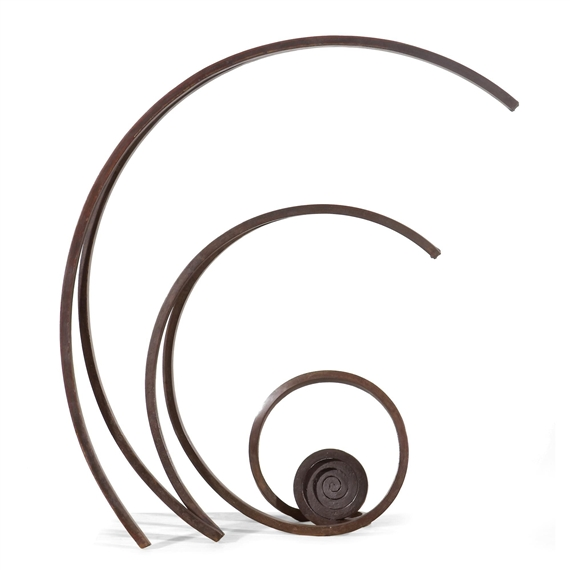
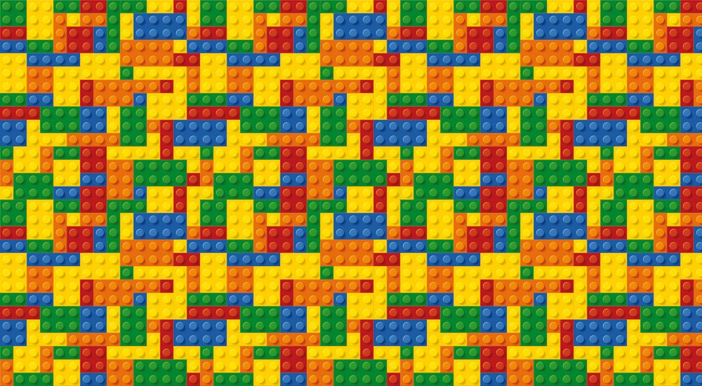
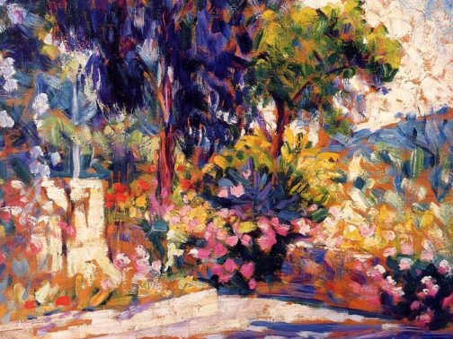
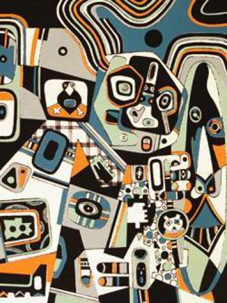
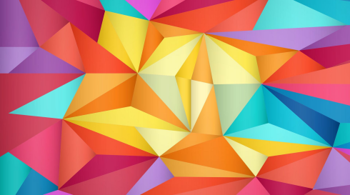
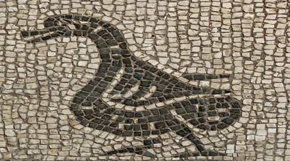

ARF-Plus: Controlling Perceptual Factors in Artistic Radiance Fields for 3D Scene Stylization
Perceptual Factors Controls:
Colour, Scale, Spatial, and Depth Controls




Abstract
The radiance fields style transfer is an emerging field that has recently gained popularity as a means of 3D scene stylization, thanks to the outstanding performance of neural radiance fields in 3D reconstruction and view synthesis. We highlight a research gap in radiance fields style transfer, the need for sufficient perceptual controllability, motivated by the existing concept in the 2D image style transfer. In this paper, we present ARF-Plus, a unique 3D neural style transfer framework offering manageable control over perceptual factors, to systematically explore the perceptual controllability in 3D scene stylization. Four distinct types of controls - color preservation control, (style pattern) scale control, spatial (selective stylization area) control, and depth enhancement control - come with our proposed novel loss functions and strategies, seamlessly integrated into this framework. This unlocks a realm of limitless possibilities, allowing customized modifications of stylization effects and flexible merging of the strengths of different styles, ultimately enabling the creation of novel and eye-catching stylistic effects on 3D scenes.
Scale Control with Multiple Styles:
Scale up / down styles to generate a blended effect


Scale up the spiral style,
scale down the brick pattern
Scale down the spiral style,
scale up the brick pattern control
The Combination of ARF-Plus Controls:
Greater Flexibility and Endless Possibility


Spatial control with multiple styles & colour preservation (background region) control


Spatial control with multiple styles & scale control (horse) & colour preservation (whole scene) control
BibTeX
@inproceedings{li2025arf,
title={Arf-plus: Controlling perceptual factors in artistic radiance fields for 3d scene stylization},
author={Li, Wenzhao and Wu, Tianhao and Zhong, Fangcheng and Oztireli, Cengiz},
booktitle={2025 IEEE/CVF Winter Conference on Applications of Computer Vision (WACV)},
pages={2301--2310},
year={2025},
organization={IEEE}
}